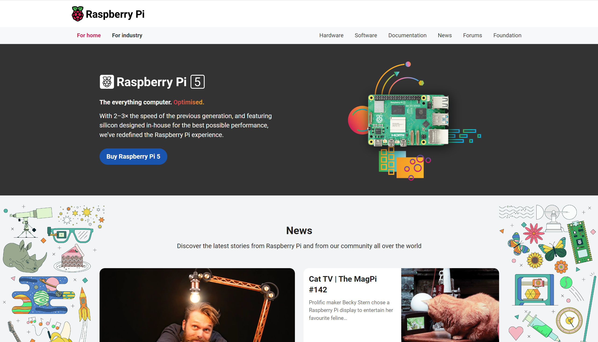
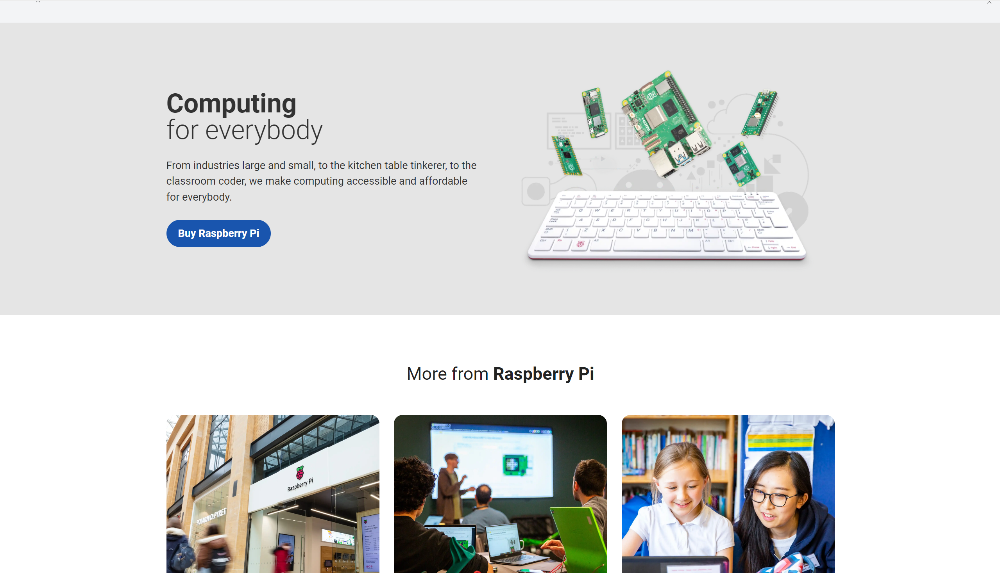
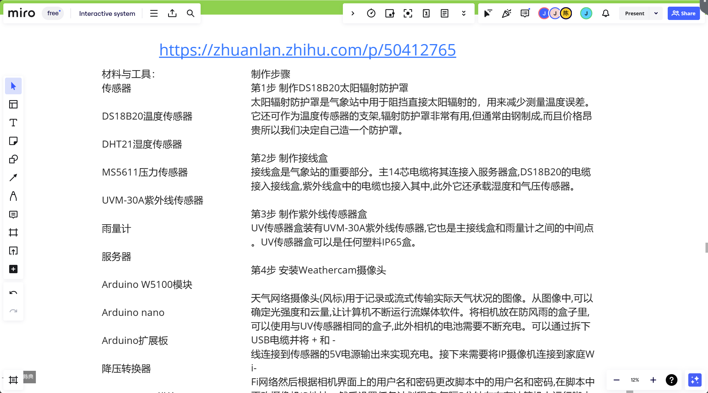
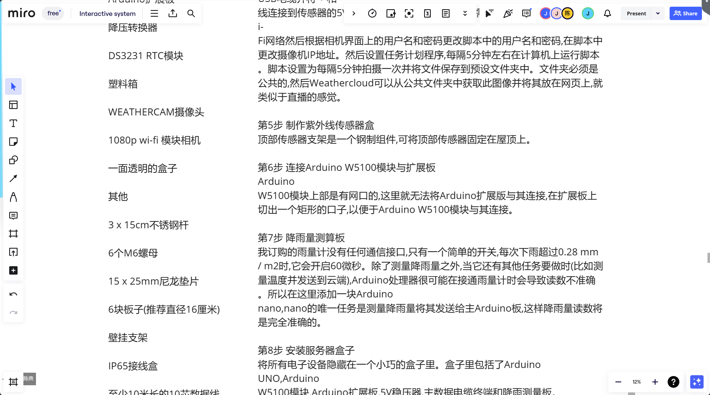
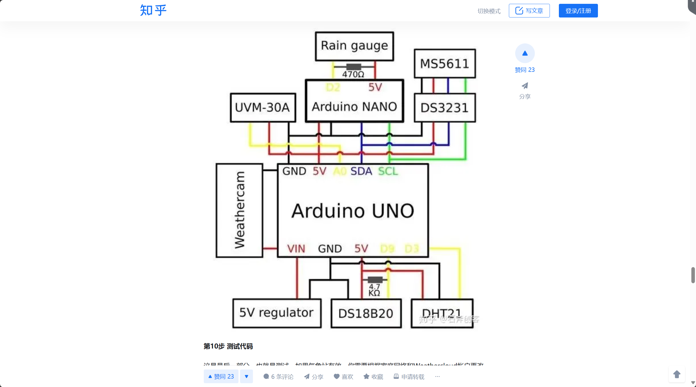
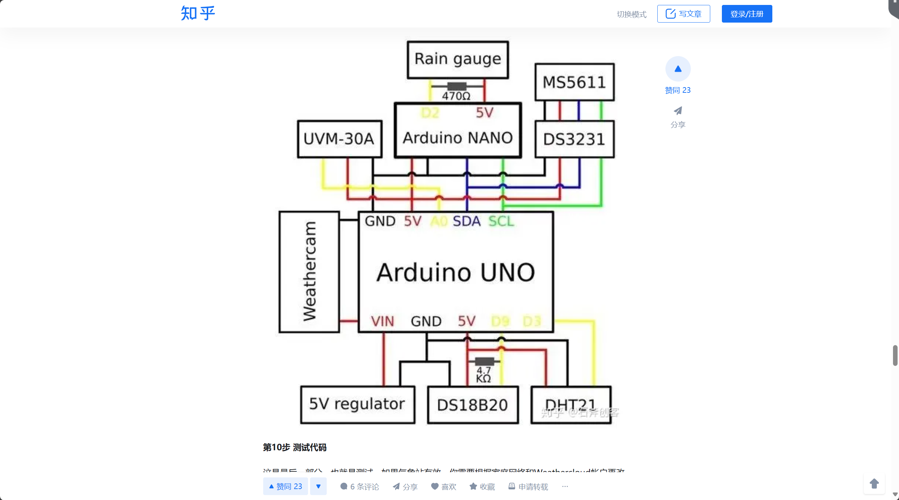
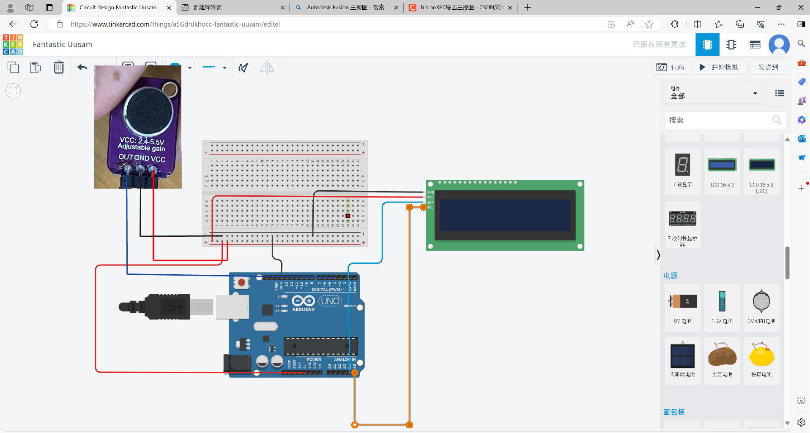
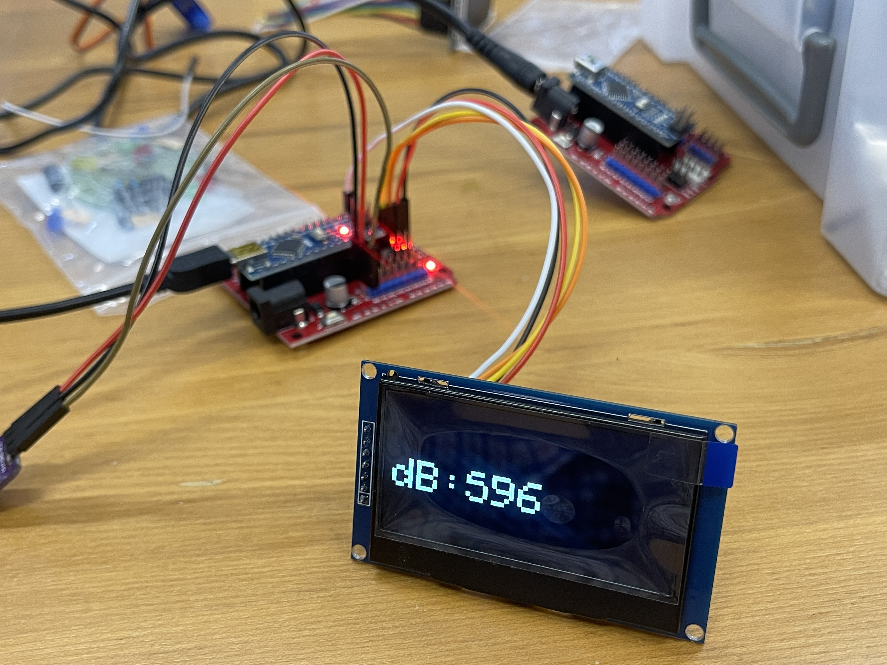
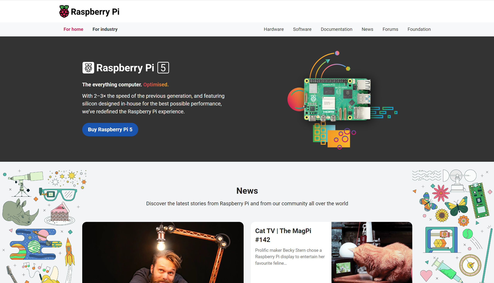
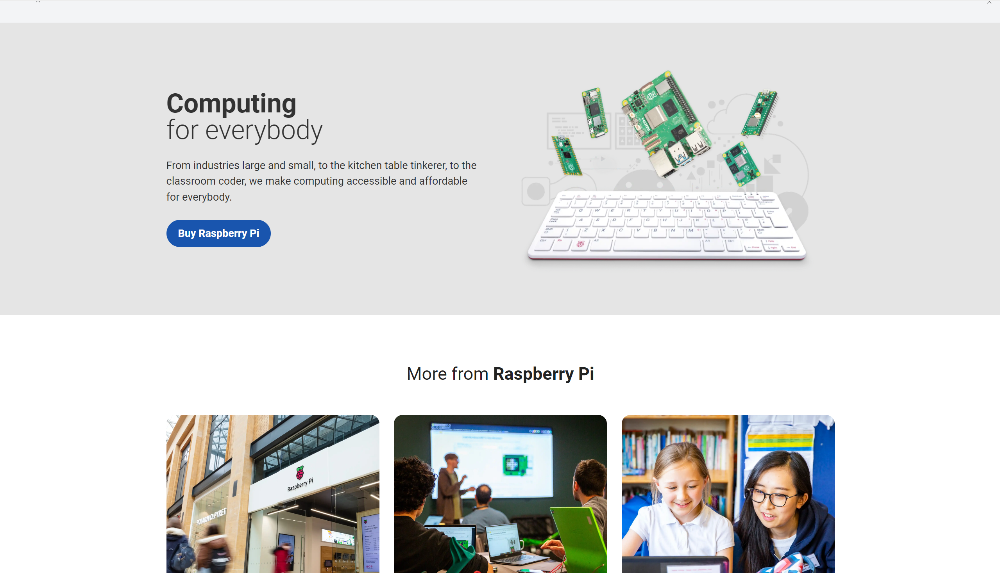

Main content:
Product information:
Raspberry Pi official website provides detailed information about
various Raspberry Pi board computers, including technical
specifications, function introduction, performance parameters,
etc.
Educational resources:
The official website provides educators, students and enthusiasts
with rich educational resources, including teaching guides,
curriculum plans, project examples, etc., to help them use
Raspberry Pi for programming and electronic experiments.
Community Forum:
The official website has a community forum for users to exchange
experience, share projects and solve problems. This is an active
community that brings together Raspberry Pi lovers from all over
the world.
News and activities:
The official website regularly publishes news and activity
information related to Raspberry Pi, including product releases,
technical updates, competition events, etc., so that users can
keep abreast of the latest developments.
Store:
There is an official store on the official website, where users
can buy Raspberry Pie board computers and accessories, which is
convenient and fast.
Documentation and support:
The official website provides detailed documentation and technical
support to help users understand how to use Raspberry Pi, solve
common problems, and carry out project development and creation.
The official website of Raspberry Pi is the core platform of the
Raspberry Pi community, which provides users with comprehensive
resources and support, and promotes the application and
development of Raspberry Pi in the fields of education, maker and
Internet of Things.



BBST
Final
BSST Team | ZWU
2024.6
The name of the project is to build a tall Weathercloud weather
station in Ardiuno
Advantages: Using the Ardiuno nano board, which is the same as the board used in the previous hardware class, it is better for us to learn to use and operate.
Disadvantages: At present, the hardware knowledge is relatively small, and a lot of learning and practice are still needed. At the same time, the project was just a meteorological device, and we needed to integrate it with our thematic climate action, and as art and technology students, we needed a more aesthetically pleasing and thought-provoking design solution.。
Advantages: Using the Ardiuno nano board, which is the same as the board used in the previous hardware class, it is better for us to learn to use and operate.
Disadvantages: At present, the hardware knowledge is relatively small, and a lot of learning and practice are still needed. At the same time, the project was just a meteorological device, and we needed to integrate it with our thematic climate action, and as art and technology students, we needed a more aesthetically pleasing and thought-provoking design solution.。
Course → Arduino basic & Input
3.some open source projects


 

1.Noise input detection
Objective: Collect the current real-time ambient sound through the sound
sensor and convert it into digital information to realize the detection
of sound decibels.

Effect display

Circuit diagram connection
Arduino Code
1.Introduction to the open source website
Raspberry Pi official website: provides hardware information,
documents, resources and projects of Raspberry Pi single-board
computers.
Website: www.raspberrypi.org
Website: www.raspberrypi.org
【淘宝】https://m.tb.cn/h.gVHg98ttPsa1xzL?tk=K9MqWDKS8cD CZ3458
「2.42寸OLED显示液晶屏模块分辨率128*64 SPI/IIC接口SSD1309驱动」
点击链接直接打开 或者 淘宝搜索直接打开


点击链接直接打开 或者 淘宝搜索直接打开
1
2
3
4
5
6
7
8
9
10
11
12
13
14
15
16
17
18
19
20
21
22
23
24
25
26
27
28
29
30
31
32
33
34
35
36
37
38
39
40
41
42
43
44
45
46
47
48
49
50
51
2
3
4
5
6
7
8
9
10
11
12
13
14
15
16
17
18
19
20
21
22
23
24
25
26
27
28
29
30
31
32
33
34
35
36
37
38
39
40
41
42
43
44
45
46
47
48
49
50
51
#include
<
Adafruit_GFX.h
>
#include < Adafruit_SSD1306.h >
#define SCREEN_WIDTH 128 // OLED display width, in pixels
#define SCREEN_HEIGHT 64 // OLED display height, in pixels
#define OLED_RESET 3 // Reset pin # (or -1 if sharing reset pin)
Adafruit_SSD1306 display ( SCREEN_WIDTH , SCREEN_HEIGHT , & Wire, OLED_RESET );
int san = 0 ;
void setup ()
{
Serial. begin ( 115200 );
if ( ! display. begin ( SSD1306_SWITCHCAPVCC , 0x3C ))
{
Serial. println ( "SSD1306 allocation failed" );
while ( 1 ); //Don't proceed, loop forever
}
//display.display();
//delay(100);
//display.clearDisplay();
display. clearDisplay ();
display. setTextColor ( WHITE );
display. setTextSize ( 4 );
display. setCursor ( 20 , 10 );
display. print ( "OLED" );
display. display ();
delay ( 200 );
}
void loop ()
{
int san = 0 ;
for (int i = 0 ; i < 10 ; i ++ ) {
san = san + analogRead ( A0 );
delay ( 5 );
}
san = san / 10 ;
display. clearDisplay ();
display. setTextSize ( 2 );
display. setCursor ( 0 , 30 );
display. print ( "dB:" );
display. println (san);
display. display ();
Serial. print ( 1000 );
Serial. print ( " " );
Serial. print ( 10 );
Serial. print ( " " );
Serial. println (san, DEC );
delay ( 10 );
}
#include < Adafruit_SSD1306.h >
#define SCREEN_WIDTH 128 // OLED display width, in pixels
#define SCREEN_HEIGHT 64 // OLED display height, in pixels
#define OLED_RESET 3 // Reset pin # (or -1 if sharing reset pin)
Adafruit_SSD1306 display ( SCREEN_WIDTH , SCREEN_HEIGHT , & Wire, OLED_RESET );
int san = 0 ;
void setup ()
{
Serial. begin ( 115200 );
if ( ! display. begin ( SSD1306_SWITCHCAPVCC , 0x3C ))
{
Serial. println ( "SSD1306 allocation failed" );
while ( 1 ); //Don't proceed, loop forever
}
//display.display();
//delay(100);
//display.clearDisplay();
display. clearDisplay ();
display. setTextColor ( WHITE );
display. setTextSize ( 4 );
display. setCursor ( 20 , 10 );
display. print ( "OLED" );
display. display ();
delay ( 200 );
}
void loop ()
{
int san = 0 ;
for (int i = 0 ; i < 10 ; i ++ ) {
san = san + analogRead ( A0 );
delay ( 5 );
}
san = san / 10 ;
display. clearDisplay ();
display. setTextSize ( 2 );
display. setCursor ( 0 , 30 );
display. print ( "dB:" );
display. println (san);
display. display ();
Serial. print ( 1000 );
Serial. print ( " " );
Serial. print ( 10 );
Serial. print ( " " );
Serial. println (san, DEC );
delay ( 10 );
}